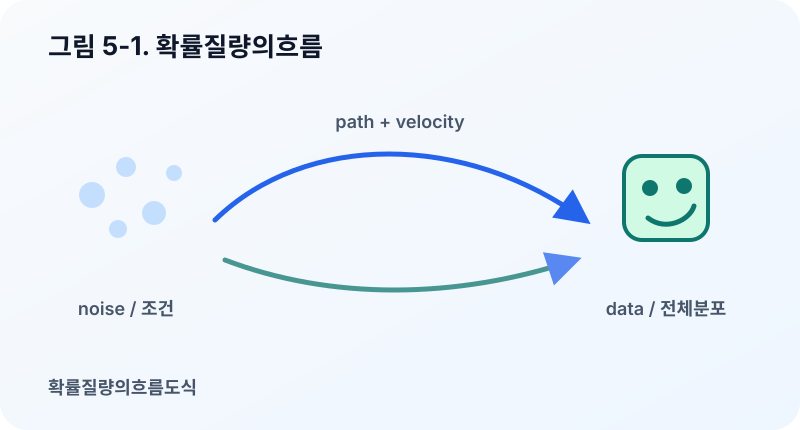
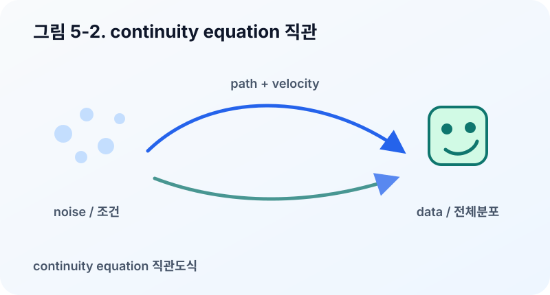
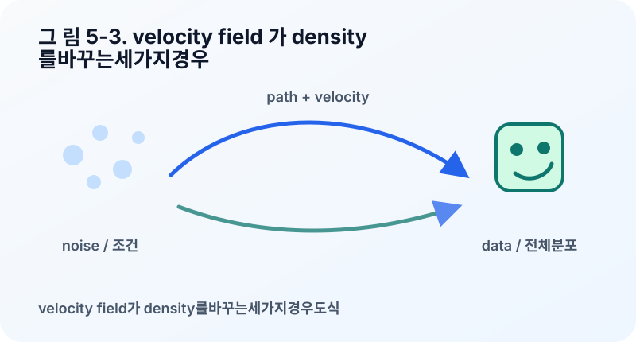
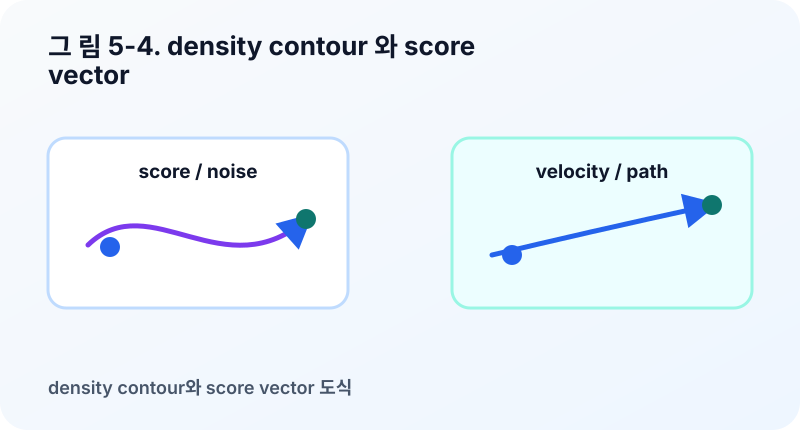
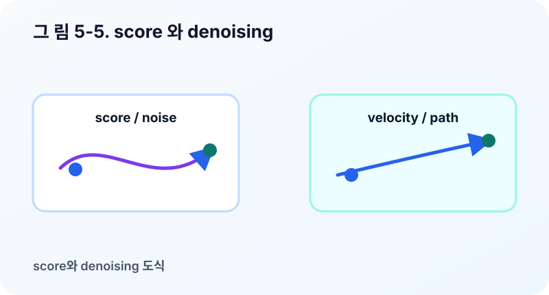
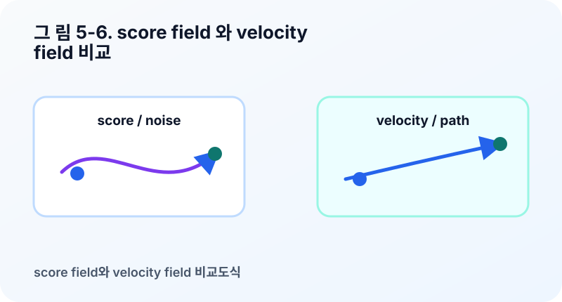

5장. 확률 질량 보존과 score¶
분포가 움직일 때 확률 질량은 어디로 사라지지 않고 어떻게 보존될까?
3장에서는 velocity field가 샘플을 움직이고, 많은 샘플의 움직임이 분포 \(p_t\)의 변화를 만든다고 보았다. 4장에서는 diffusion model이 noise가 들어간 stochastic dynamics로 data와 noise를 연결한다는 관점을 살펴보았다. 이제 두 관점을 이어주는 중요한 언어를 배울 차례다.
첫 번째 언어는 continuity equation이다. 이것은 분포가 움직일 때 확률 질량이 어떻게 보존되는지를 설명한다. 두 번째 언어는 score다. 이것은 diffusion model에서 denoising 방향을 이해하는 데 핵심적인 역할을 한다.
이 장의 목표는 두 개념을 완전히 증명하는 것이 아니다. 대신 “velocity field가 분포를 어떻게 바꾸는가”와 “score가 density의 모양을 어떻게 읽는가”를 직관적으로 이해하는 것이다. 이 둘을 구분할 수 있으면 diffusion과 Flow Matching의 차이가 훨씬 선명해진다.
확률 질량은 사라지지 않는다¶
분포를 물이나 공기의 흐름처럼 생각해보자. 어떤 영역에 샘플이 많이 모이면 density가 높다. 샘플이 그 영역을 빠져나가면 density는 낮아진다. 반대로 다른 영역에서 샘플이 들어오면 density는 높아진다.
중요한 것은 샘플이 이동한다고 해서 전체 확률 질량이 사라지는 것은 아니라는 점이다. 샘플들이 어디론가 이동할 뿐이다. 전체 확률은 여전히 1이어야 한다.
시간이 지나도 이 값은 유지되어야 한다. 분포가 변한다는 것은 확률 질량이 공간 안에서 재배치된다는 뜻이다. 어떤 곳은 비워지고, 어떤 곳은 채워진다.
이 생각을 수식으로 표현한 것이 continuity equation이다.

Continuity equation의 직관¶
Continuity equation은 다음처럼 쓸 수 있다.
처음 보면 복잡해 보인다. 하지만 각 부분을 말로 풀면 구조는 단순하다.
은 시간에 따라 density가 얼마나 변하는지를 나타낸다. 어떤 위치 \(x\)에서 density가 증가하는지 감소하는지를 말한다.
는 확률 질량의 흐름이라고 볼 수 있다. Density가 높은 곳에서 velocity가 크면 많은 확률 질량이 그 방향으로 이동한다.
는 그 위치에서 확률 질량이 얼마나 빠져나가거나 들어오는지를 나타낸다. Divergence가 양수면 그 주변에서 질량이 퍼져나가는 느낌이고, 음수면 질량이 모여드는 느낌이다.
따라서 continuity equation은 이렇게 읽을 수 있다.
어떤 위치의 density 변화는 그 위치 주변으로 확률 질량이 얼마나 들어오고 나가는지에 의해 결정된다.
이 식을 조금 더 일반적인 형태로 쓰면 flux \(J_t(x)\)가 등장한다.
Flux는 확률 질량이 실제로 흘러가는 양과 방향을 뜻한다. Flow Matching처럼 deterministic velocity field만 있는 경우에는 보통
로 볼 수 있다. Density가 높은 곳에서 큰 속도로 움직이면 많은 확률 질량이 이동한다는 뜻이다. 반면 diffusion 관점에서는 flux를 drift와 diffusion 항으로 나누어 읽을 수 있다.
첫 번째 항 \(f_t(x)p_t(x)\)는 바람이나 물살처럼 분포를 특정 방향으로 밀어 주는 drift다. 두 번째 항 \(-D_t\nabla p_t(x)\)는 밀도가 높은 곳에서 낮은 곳으로 퍼지는 diffusion flux다. 이 둘을 함께 쓰면 Fokker-Planck equation의 직관으로 이어진다. 이 책에서는 엄밀한 확률과정 이론보다 다음 그림을 붙잡으면 충분하다.
- Flow Matching은 확률 질량을 velocity field로 운반하는 관점이 중심이다.
- Diffusion은 drift에 더해 noise가 만드는 확산 효과를 함께 다룬다.
- 두 관점 모두 “확률 질량은 사라지지 않고 흐른다”는 continuity equation 위에 서 있다.
이 장에서는 이 식의 엄밀한 유도보다 직관이 중요하다. Flow Matching에서 velocity field를 학습한다는 말은 단지 샘플 하나의 방향을 맞춘다는 뜻만이 아니다. 그 velocity field가 전체 분포의 density 변화를 만들어낸다는 뜻이기도 하다.

Velocity field와 density 변화¶
3장에서 velocity field \(v_t(x)\)를 “각 위치의 화살표 지도”라고 했다. 이제 이 화살표 지도가 density를 어떻게 바꾸는지 생각해보자.
모든 화살표가 같은 방향과 같은 크기를 가진다면 샘플 구름은 통째로 이동한다. Density의 모양은 크게 변하지 않고 위치만 바뀔 수 있다. 반대로 화살표들이 한 점으로 모이도록 향하면 샘플들이 압축되고 density가 높아질 수 있다. 화살표들이 바깥으로 퍼지면 density는 낮아질 수 있다.
즉 velocity field는 두 가지를 동시에 한다.
- 개별 샘플의 trajectory를 만든다.
- 전체 분포의 density 변화를 만든다.
Flow Matching이 velocity field를 학습한다는 말은 이 두 수준을 모두 포함한다. Sampling할 때 우리는 개별 샘플 하나를 ODE(Ordinary Differential Equation, 상미분방정식)로 움직인다. 하지만 좋은 샘플을 얻으려면 많은 샘플을 움직였을 때 전체 분포가 목표 분포 \(p_1\)에 가까워져야 한다.

Score는 density가 증가하는 방향이다¶
이제 score를 보자. Score는 다음처럼 정의된다.
여기서 \(p_t(x)\)는 시간 \(t\)에서의 density다. \(\log p_t(x)\)는 density에 log를 취한 값이고, \(\nabla_x\)는 위치 \(x\)에 대한 gradient다.
처음에는 왜 굳이 log를 취하는지 궁금할 수 있다. 엄밀한 이유는 여러 가지가 있지만, 직관적으로는 score가 “현재 위치에서 density가 상대적으로 증가하는 방향”을 알려준다고 생각하면 된다. Density가 높은 쪽으로 올라가는 방향을 가리키는 화살표다.
1차원 Gaussian을 생각해보자. 평균이 0인 Gaussian에서는 \(x=2\)에 있을 때 density가 더 높은 쪽은 왼쪽, 즉 0을 향하는 방향이다. \(x=-2\)에 있을 때는 오른쪽이 density가 높아지는 방향이다. Score는 이런 방향 정보를 준다.

Score는 denoising 방향과 연결된다¶
Diffusion model에서 score가 중요한 이유는 noise가 섞인 샘플을 더 그럴듯한 data 쪽으로 움직이는 데 필요한 정보를 제공하기 때문이다.
Noise가 많이 섞인 샘플 \(x_t\)를 생각하자. 이 샘플은 완전히 무작위 noise와 깨끗한 data 사이 어딘가에 있다. 이때 score \(\nabla_x \log p_t(x)\)는 현재 noise level의 분포에서 density가 높아지는 방향을 알려준다. Density가 높은 방향은 그 시간의 분포에서 더 그럴듯한 샘플 쪽이라고 볼 수 있다.
Denoising score matching은 대략적으로 이런 방향을 모델이 배우게 한다. 모델은 noise가 섞인 샘플을 보고, 그 샘플이 더 높은 density 영역으로 가려면 어떤 방향으로 움직여야 하는지 학습한다.
여기서 조심할 점이 있다. Score가 곧바로 “깨끗한 이미지 정답”을 주는 것은 아니다. Score는 현재 시간 \(t\)의 noisy distribution \(p_t\)에서 density가 증가하는 방향을 알려준다. Reverse diffusion은 이 정보를 시간에 따라 사용해 noise에서 data로 돌아가는 dynamics를 구성한다.

Score field와 velocity field는 다르다¶
Score field와 velocity field는 모두 위치마다 벡터를 준다. 그래서 처음에는 비슷하게 느껴진다. 하지만 의미는 다르다.
Score field는 density의 모양에서 나온다.
현재 위치에서 density가 증가하는 방향을 알려준다.
Velocity field는 path의 움직임에서 나온다.
현재 위치의 샘플이 시간에 따라 실제로 어느 방향으로 움직여야 하는지 알려준다.
둘은 연결될 수 있지만 같은 개념은 아니다. Diffusion 계열 모델에서는 score가 reverse dynamics를 구성하는 데 핵심 역할을 한다. Flow Matching에서는 score를 직접 학습하지 않고, probability path를 따라가는 velocity field를 직접 맞춘다.
이 차이는 뒤에서 diffusion과 Flow Matching을 비교할 때 중요하다.
- Diffusion: score 또는 noise 예측을 통해 reverse dynamics를 구성한다.
- Flow Matching: target velocity를 직접 맞추어 ODE(Ordinary Differential Equation, 상미분방정식) sampling에 사용할 vector field를 학습한다.

왜 Flow Matching은 score 없이도 학습할 수 있을까¶
Flow Matching은 score를 직접 학습하지 않는다. 대신 조건부 path에서 target velocity를 만든다. 예를 들어 단순 직선 path에서는 다음처럼 중간 샘플과 target velocity를 정의할 수 있었다.
모델은 \(v_\theta(t, x_t)\)가 이 target velocity \(u_t\)를 맞추도록 학습한다. 이 방식은 score를 계산하지 않고도 사용할 수 있다. 복잡한 \(\nabla_x \log p_t(x)\)를 직접 추정하는 대신, path에서 유도한 velocity target을 맞추는 것이다.
물론 이것이 score와 완전히 무관하다는 뜻은 아니다. 어떤 diffusion path에서는 score와 velocity가 수식적으로 연결된다. 그러나 학습 objective의 관점에서 보면 Flow Matching은 “score를 먼저 배우고 reverse dynamics를 구성한다”기보다 “path를 따라가는 velocity를 직접 맞춘다”는 쪽에 가깝다.
이것이 Flow Matching을 이해할 때 중요한 전환이다.
생성 문제를 density gradient를 배우는 문제로 볼 수도 있고, probability path를 따라가는 velocity field를 배우는 문제로 볼 수도 있다.
Flow Matching으로 이어지는 연결¶
이 장까지 오면 기본편의 수학 언어가 거의 준비되었다. 우리는 다음을 배웠다.
- \(p_t\)는 시간에 따라 변하는 중간 분포다.
- \(v_t(x)\)는 샘플을 움직이는 velocity field다.
- Continuity equation은 velocity field가 density 변화를 어떻게 만드는지 설명한다.
- \(\nabla_x \log p_t(x)\)는 score이며, diffusion의 reverse dynamics와 연결된다.
- Flow Matching은 score 대신 velocity target을 직접 맞추는 관점으로 볼 수 있다.
다음 장부터는 2부로 넘어가 Flow Matching 자체를 정면으로 다룬다. 이제 “Flow Matching은 무엇을 학습하는가?”라는 질문에 더 정확히 답할 준비가 되었다.
요약¶
- Continuity equation은 움직이는 분포에서 확률 질량이 보존되는 방식을 설명한다.
- Velocity field \(v_t(x)\)는 개별 샘플의 trajectory뿐 아니라 전체 density의 시간 변화를 만든다.
- Score \(\nabla_x \log p_t(x)\)는 현재 위치에서 log density가 증가하는 방향을 알려준다.
- Diffusion model은 score를 통해 noisy sample을 더 그럴듯한 영역으로 움직이는 reverse dynamics를 구성한다.
- Flow Matching은 score를 직접 학습하기보다 probability path를 따라가는 velocity field를 직접 맞춘다.